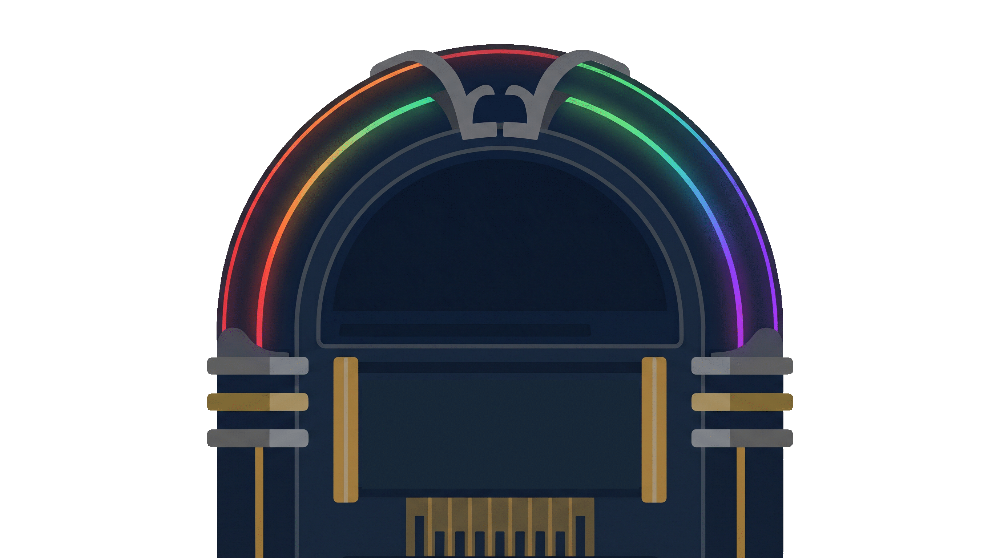

Skip to image selection
SteadSound

NASA image
Loading catalog…
Open image
Reload catalog
Reduce motion
High contrast
Read descriptions aloud
Explore the image using the keyboard, or read its description.